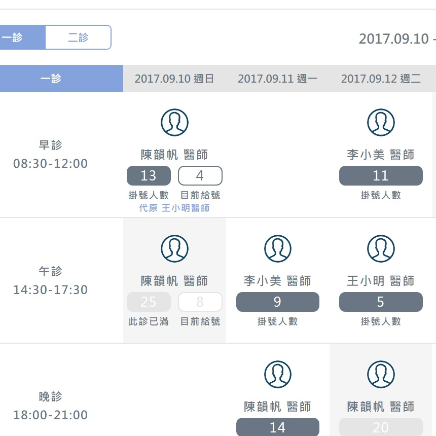
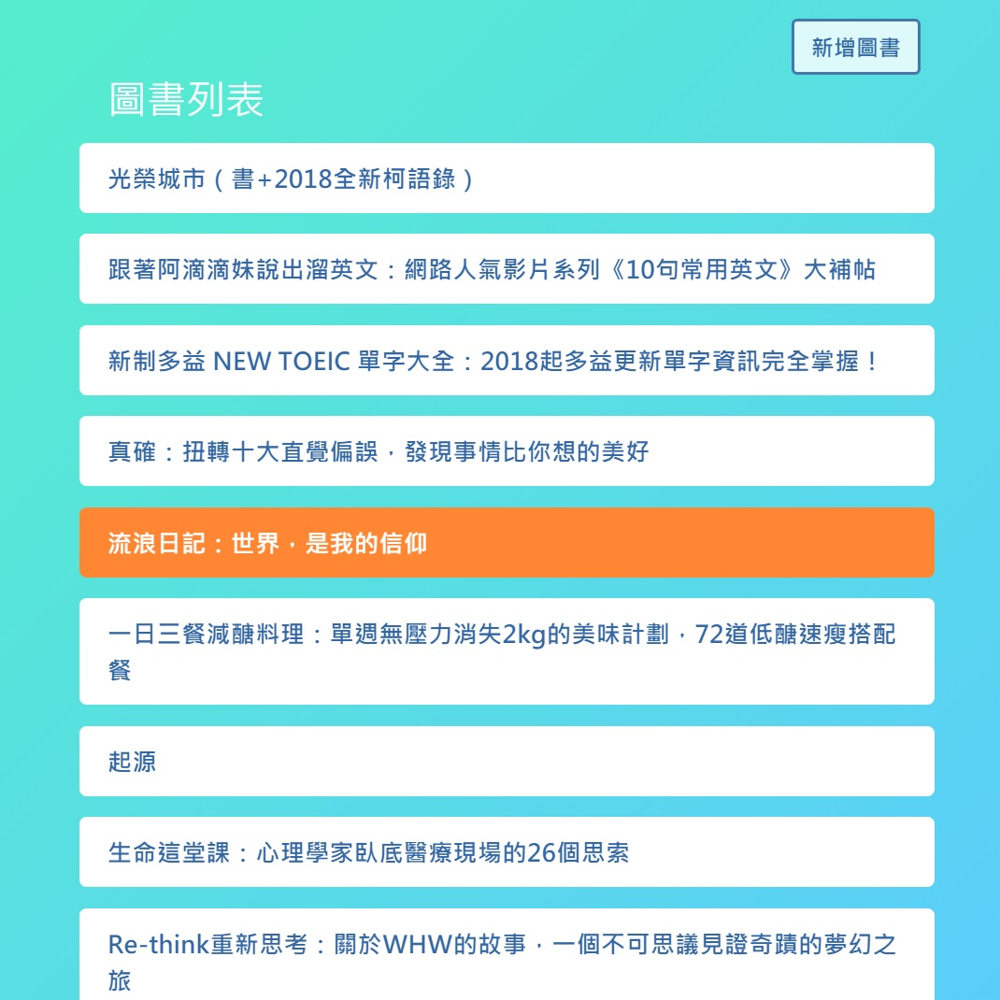

我的作品集
【 摘星星 】
實作 CSS 動畫
使用 JS ondragover Event 及
draggable 屬性做出可拖曳元件
CSS transform 屬性之練習
【 Pinkoi 】
仿購物網站的設計做切版練習
使用 setInterval 製作圖片輪播
jQuery selectors 之練習
製作商品 photo carousel

【 診所班表 】
使用 tab 切換診別
適應各裝置尺寸的RWD頁面
串接第三方 API 資料
(此頁面暫時使用固定資料)
【 掛號表單 】
表單 UI Design
製作客製化 radio button
適應各裝置尺寸的RWD頁面
使用表單驗證
【 Youtube 】
使用 React 結構製作元件
串接 Youtube API 資料
使用 Webpack 打包js檔，整合及編譯 SCSS & ES6語法

【 Posts CRUD 】
使用 Redux-form 傳送表單資料
串接第三方 API 資料
使用 React-Router 切換頁面
& Redux-promise 處理資料